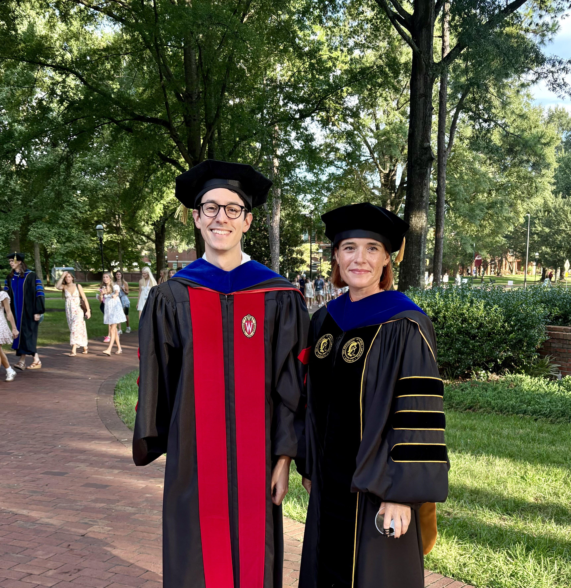
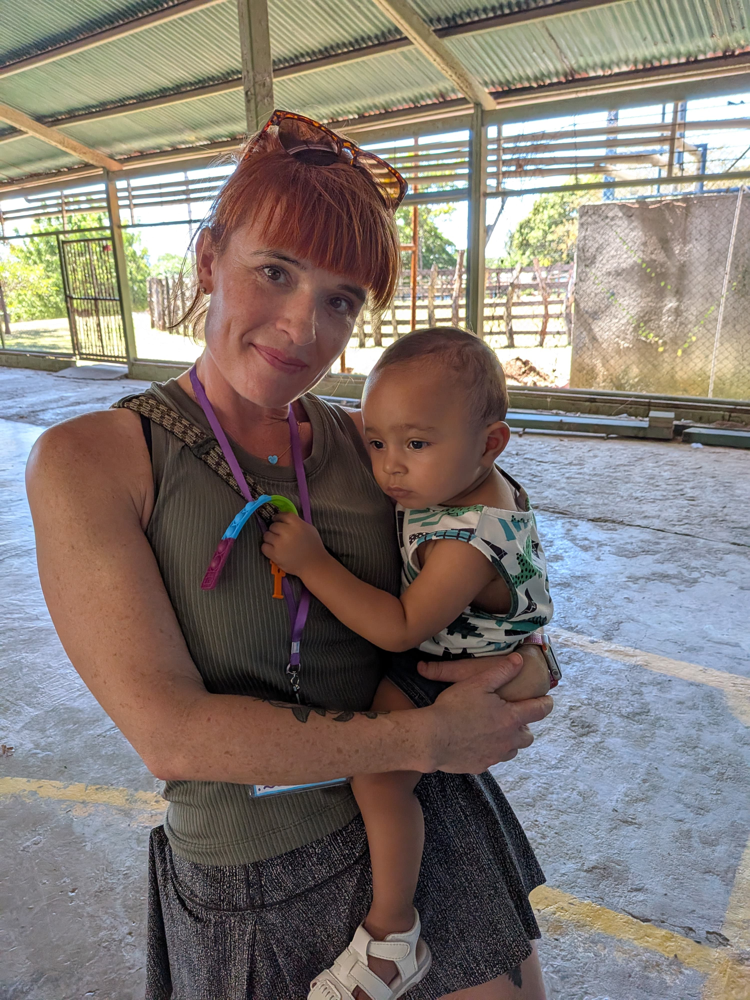

Lake Ohrid, Macedonia
Lake Ohrid, Macedonia
About Me
I am an Assistant Professor of Human Service Studies at Elon University, where I am proud to teach and mentor students on their journey to becoming compassionate, competent changemakers.
Before entering academia, I was a practicing social worker. I worked with older adults, families, and schools around a diverse array of issues, and that practice background shapes how I think about theory and research. In 2017 I came to North Carolina to pursue my PhD in Human Development and Family Studies under Jonathan Tudge at UNC Greensboro, graduating in 2022. My scholarly identity is rooted in Bronfenbrenner's bioecological theory, and that work led me to develop neo-ecological theory, a framework that adds virtual microsystems to account for the digital contexts in which so much of our interactions and activities occur in the 21st century.
At Elon I teach courses in human services theory and practice, close relationships, social policy, gerontology, research methods, and global engagement. My teaching is discussion-driven and relationship-centered, and I work to actively decenter traditional hierarchical approaches to teaching and learning and bring an equity-based lens to my classroom. I feel lucky to have been mentored by remarkable teachers and scholars throughout my life, and I strive to offer the same to my students.
Growing up, I lived on five continents, and I bring that global lens into everything I do. I went to high school in Aberdeen, Scotland, and still think of it as "home." I currently live in North Carolina with my three children. I enjoy spending time in the NC outdoors, walking with friends, on the pilates mat, at live music, and learning to paint.
 With Dr. Jonathan Tudge, Serbia
With Dr. Jonathan Tudge, Serbia

With Dr. Tony Reyes, Elon University
Fieldwork, Costa RicaDegrees
- PhD, Human Development & Family Studies UNC Greensboro
- MSW Brown School at Washington University in St. Louis
- BA, Public Health Brown University
Research Areas
- Developmental theory Neo-ecological & bioecological
- Technology & family life
- Parent-child relationships
- Adolescent well-being
- AI, technology, & human development
- Global engagement and pedagogy
Beyond the Work
- Third culture kid, five continents
- Three children
- NC outdoors (beach & mountains)
- Pilates
- Live music
- Amateur watercolorist